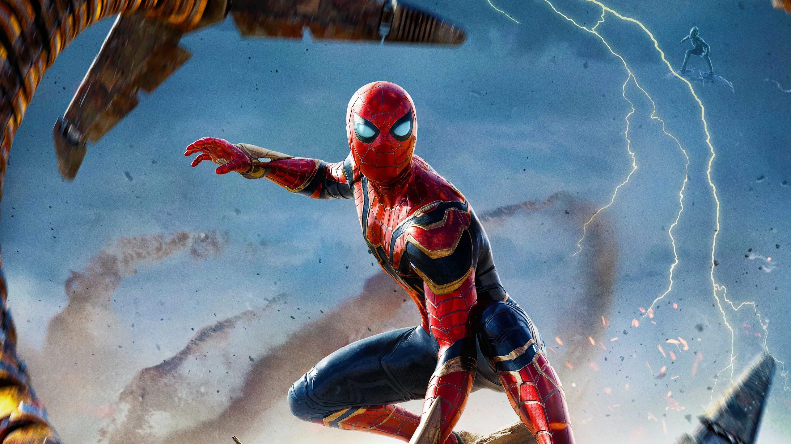

Spider-Man: No Way Home è un film del 2021 diretto da Jon Watts.
Basato sul personaggio dell'Uomo Ragno di Marvel Comics, il film è co-prodotto da Columbia Pictures e Marvel Studios e distribuito da Sony Pictures. È il 27º film del Marvel Cinematic Universe, nonché sequel del film Spider-Man: Far from Home (2019). Scritto da Chris McKenna ed Erik Sommers, il film ha come protagonista Tom Holland, affiancato da Zendaya, Benedict Cumberbatch, Jacob Batalon, Jon Favreau, Jamie Foxx, Willem Dafoe, Alfred Molina, Benedict Wong, Tony Revolori, Marisa Tomei, Andrew Garfield e Tobey Maguire. Nel film, Peter si ritrova a dover affrontare nemici provenienti da altri universi e a scoprire cosa significa davvero essere Spider-Man.

TRAMA
Una settimana dopo gli attacchi di Quentin Beck in Europa, viene pubblicato un video in cui Beck incolpa Spider-Man della sua morte e rivela la sua identità segreta. Peter e MJ fuggono dai giornalisti e si dirigono verso l'appartamento di Peter, riunendosi con sua zia May e Happy. Con l'appartamento circondato dal Dipartimento del Controllo dei Danni, Peter, MJ, Ned e May vengono presi in custodia e interrogati, ma le accuse legali vengono ritirate grazie all'avvocato Matt Murdock. Peter, MJ e Ned tornano a scuola, ma tutte le loro domande di ammissione all'università vengono respinte a causa delle recenti controversie. Peter chiede allora al dr. Stephen Strange, nel Sanctum Sanctorum, di lanciare un incantesimo per far dimenticare a tutti che lui è Spider-Man. Nonostante l'avvertimento di Wong sulle possibili conseguenze, Strange lancia l'incantesimo. Tuttavia, Peter chiede costantemente delle modifiche, interrompendolo prima della riuscita. Irritato, Strange gli ordina di andarsene, dopo avere saputo che non ha provato a contattare l'M.I.T. prima di richiedere l'incantesimo.
Peter cerca di convincere un'amministratrice dell'M.I.T. ad accettare le domande di MJ e Ned, ma viene attaccato dal Dottor Octopus. I due hanno un combattimento fin quando Octopus strappa la nanotecnologia di Peter dalla sua tuta di Iron Spider e la lega ai suoi tentacoli meccanici. Dopo aver scoperto che quello non è il Peter Parker che conosce, il Dottor Octopus viene privato del controllo delle sue braccia robotiche da Peter, per poi essere catturato e messo in una cella nel Sanctorum, insieme a Curt Connors, catturato da Strange. Quest'ultimo rivela che l'incantesimo ha portato con sé, da ogni parte del multiverso, coloro che sanno che Peter è Spider-Man. Con l'aiuto di MJ e Ned, Peter cattura Max Dillon e Flint Marko. Altrove, Norman Osborn viene recuperato dopo essere andato nell'ufficio di May in cerca di aiuto. Strange vuole rimandare i cattivi nei loro rispettivi universi, lasciandogli affrontare i loro destini, il che può anche significare morire combattendo Spider-Man. Tuttavia, Parker vuole curarli e aiutarli prima di rimandarli indietro per evitare le loro morti. Quindi li libera e, dopo un breve combattimento, confina Strange nella Dimensione Specchio, portando poi il quintetto a casa di Happy.
Peter cura con successo il Dottor Octopus, usando la tecnologia delle Stark Industries per sostituire il suo chip inibitore rotto. Quando vengono trovate le cure anche per Norman e Max, Green Goblin prende il controllo su Norman prima che gli possa essere somministrata la cura. Goblin convince Max a rimuovere il dispositivo che Parker ha messo su di lui per curarlo e, nonostante gli sforzi di Peter e del Dottor Octopus, gli altri quattro fuggono. In seguito, May viene ferita mortalmente da Green Goblin, nonostante il tentativo di Peter di salvarla. Nel frattempo, MJ e Ned imparano ad aprire dei portali usando l'anello di Strange, nel tentativo di trovare il loro amico. Invece, trovano due Peter di altri universi. MJ e Ned trovano il Peter del loro universo, che incontra gli altri Spider-Man, che condividono le loro storie riguardo al perdere i propri cari e lo incoraggiano a combattere in onore della zia May. I tre collaborano per curare i criminali rimasti e li attirano alla Statua della Libertà. MJ e Ned proteggono l'incantesimo di Strange, mentre gli Spider-Man combattono insieme i loro nemici. In seguito vengono raggiunti dal Dottor Octopus, e riescono a sconfiggere e curare Dillon, Connors e Marko. Dillon si riconcilia con il suo Peter Parker, mentre l'altro Peter si riunisce con il Dottor Octopus.
Strange viene liberato da Ned dalla Dimensione Specchio, e prende il controllo dell'incantesimo iniziando a proteggere l'universo mentre cominciano ad aprirsi delle barriere su altri universi. Nel frattempo, un Peter infuriato combatte brutalmente Goblin, volendolo uccidere per la morte di May, ma viene fermato dal Peter dell'universo di Goblin. Peter inietta la cura a Green Goblin, riportando Norman indietro, che si mostra pentito. Su richiesta di Peter, Strange corregge l'incantesimo, inviando gli Spider-Man alternativi e i loro criminali nei rispettivi universi, facendo dimenticare a tutti l'esistenza di Peter. Peter e MJ riaffermano il loro amore l'uno per l'altro prima che l'incantesimo inizi. Due settimane dopo, Peter cerca gli ignari MJ e Ned per spiegargli la verità, per poi decidere di non farlo per lasciarli liberi di vivere una vita lontana dai guai. Dopodiché, Peter visita la tomba di May, raggiunto da un ormai ignaro Happy, e promette di andare avanti. Peter si trasferisce in un nuovo appartamento e crea un nuovo costume per riprendere la sua missione di supereroe.
Nella scena a metà dei titoli di coda, Eddie Brock e il suo compagno simbionte Venom si siedono al bar di un resort in Messico e interrogano il barista riguardo ad altri supereroi, Thanos e il Blip. Mentre riflettono su come proteggere questo nuovo mondo, il duo viene rapidamente trasportato nel loro universo dall'incantesimo di Strange, lasciando tuttavia parte del simbionte nero sul bancone.